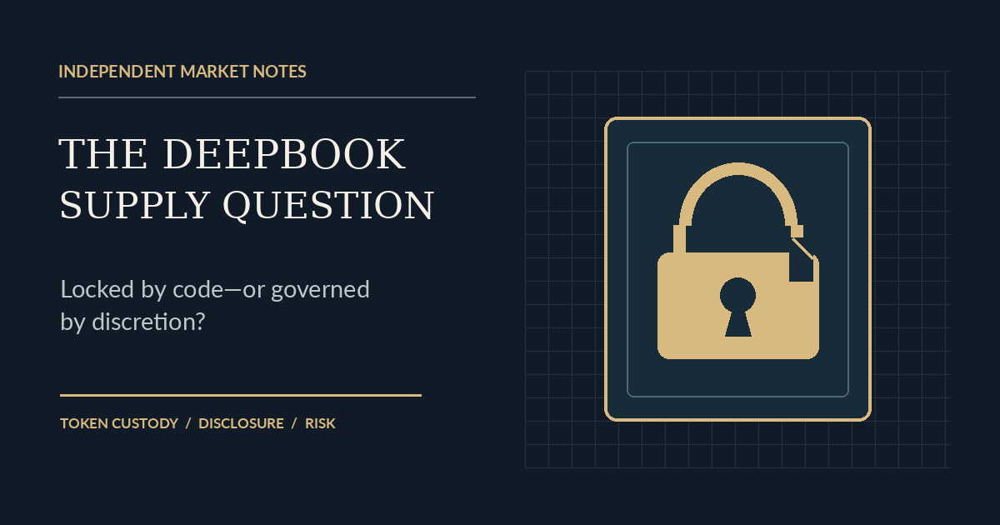

Tokenomics / Investigative analysis
DeepBook’s Supply Question: Is the Treasury Locked or Discretionary?
A reported 5.27-billion-token holder, conflicting circulation figures, and an unanswered question about who can move DEEP.

A token can have a functioning product, measurable trading activity and a plausible economic role—and still leave investors unable to answer a basic question: how much supply is actually available to move?
That is the tension at the center of DeepBook, the Sui-based on-chain order-book infrastructure project. Public token-holder pages identify one address as holding roughly 5.27 billion DEEP, more than half of the token’s stated 10-billion maximum. Yet two major market-data providers have published sharply different circulating-supply figures. And the project's allocation disclosures describe a large ecosystem treasury without conclusively identifying the controls on the reported holder.
What interests me is not the size of that balance in isolation. Large protocol treasuries are common. The consequential question is whether the tokens are subject to enforceable release restrictions or held under administrative discretion. Those are different economic risks, even when both arrangements are described as a long-term ecosystem allocation.
A real protocol, and a separate supply problem
DeepBook is not merely a token searching for a purpose. It provides shared on-chain central-limit-order-book infrastructure for applications on Sui. The DEEP token can be used to pay trading fees and obtain staking-related benefits. Official documentation also allows certain fees to be paid in input tokens, meaning DEEP is useful without being mandatory in every transaction. Sui’s DeepBook documentation describes the protocol and its operating model.
Protocol activity gives the project an empirical foundation. In snapshots discussed during this investigation, DefiLlama reported roughly $178 million–$211 million in trailing 30-day DEX volume, with tokenholder-revenue estimates around $8,859–$10,981. These are different observations at different retrieval times, not a single synchronized dataset; their methodology and the relationship between reported revenue and economic benefits to holders require scrutiny. The underlying DefiLlama protocol page is the appropriate reference for updated values.
Those numbers matter because they establish a reason to investigate DEEP seriously. They do not resolve the supply denominator used to value the token.
Two circulating supplies for the same token
On November 3, 2026, CoinGecko’s supply breakdown reported 2.5 billion DEEP circulating, alongside approximately 6.259 billion outstanding and 10 billion total. CoinMarketCap’s quote data reported approximately 6.014 billion circulating and 10 billion total. The CoinMarketCap figure was also labeled as self-reported circulating supply.
| Measure | CoinGecko | CoinMarketCap |
|---|---|---|
| Circulating DEEP | 2.500B | 6.014B |
| Maximum / total supply | 10.000B | 10.000B |
| Reported market capitalization | ~$37.9M | ~$93.9M |
| Fully diluted valuation | ~$151.6M | ~$156.1M |
| Provenance limitation | No noncirculating wallets identified in supply-breakdown response | Circulating supply also designated self-reported |
Both estimates placed DEEP within the $1 million–$100 million small-cap research range at those timestamps. But they describe very different floats. Using the two circulating-supply figures produces a roughly 2.4-fold difference in implied capitalization at a common token price. The modest difference in the providers’ fully diluted valuations reflects differing price snapshots, not a different maximum supply.
How much of the maximum supply is counted as circulating?
Scale begins at zero and ends at 100% of the 10B maximum. Historical provider estimates, not independently reconciled on-chain circulation.
There are legitimate reasons for data services to disagree. One may exclude ecosystem-controlled balances that another counts as transferable. One may rely on a project-supplied figure while another applies its own classification. The discrepancy is therefore evidence of a measurement problem, not evidence by itself of concealment or misconduct.
The address that changes the question
GeckoTerminal’s holder information identifies the following Sui address as the largest reported DEEP holder:
0x9548232f9cebbc1eec56cfb25b99f61e17924b4908248c260c8d70100c59c70d
Its reported balance is approximately 5.27 billion DEEP, or 52.7% of maximum supply. A separate holder-distribution page showed a similarly sized top balance and a second address holding roughly 1.62 billion DEEP. The two reported positions together account for approximately 69% of maximum supply. These are address-level concentrations, not proof that two people or entities beneficially own the tokens. See GeckoTerminal’s DEEP/SUI pool and holder information.
A key distinction follows: a blockchain address can belong to a treasury, custodian, vesting system, exchange or individual. A balance alone does not reveal who can authorize transfers or what restrictions apply.
What the treasury disclosures actually say
DeepBook’s published tokenomics assign 61.57% of total supply—6.157 billion DEEP—to ecosystem growth. The allocation is close enough in scale to the reported 5.27-billion holder to make a treasury connection plausible. It does not prove that connection.
A Sui-hosted DeepBook whitepaper describes the token’s design and allocation, while the project’s token page describes ecosystem distribution. A separate Kraken-published DEEP disclosure describes the Sui Foundation as the initial holder of a large ecosystem allocation and refers to an on-chain ecosystem vault with a multiyear release program. The documents do not, in the evidence available here, authenticate the reported largest-holder address as that vault.
There is also a subtle but crucial ambiguity in the language of release. A project can say tokens were “unlocked” at token generation while planning to distribute them over seven years. That may mean the tokens were technically transferable but administratively reserved. Alternatively, tokens could be held inside a Move object with time-based withdrawal restrictions. Both arrangements can support a multiyear distribution plan; only one necessarily makes that plan enforceable by code.
Three explanations remain viable
1. A genuinely restricted ecosystem vault
The large address could correspond to an ecosystem-controlled object with enforceable vesting or timelock conditions. Under this interpretation, at least some treasury balances may be properly excluded from circulating supply until release. Confirmation would require identifying the relevant Sui object and demonstrating the actual withdrawal rules, including any privileged bypass.
2. A treasury governed by authorized signers
The tokens could instead sit in ordinary transferable coin objects controlled by an authorized address or multisignature arrangement. A seven-year release plan could still be sincere and consistently followed, but the restriction would be institutional rather than automatically enforced. The economic distinction is that authorized parties may have greater discretion to accelerate transfers.
3. An address unrelated to the Foundation treasury
The holder could represent another custody or protocol arrangement. Matching its balance to the original ecosystem allocation is suggestive, not identifying evidence. A reliable attribution would require an official address statement, an unambiguous creation or funding trail, or both.
None of these explanations has been conclusively established. It would be premature to call the balance either a verified locked vault or an unrestricted Foundation wallet.
Why vesting trackers do not settle it
Third-party token-unlock dashboards have shown different unlocked-supply estimates and classifications for DEEP. Some distinguish scheduled vesting from circulation; others apply allocation-specific assumptions. These datasets can be useful leads, but they cannot replace inspection of the relevant Sui objects and transaction history.
One more complication is the token’s architecture. The official Sui documentation identifies the native coin type as 0xdeeb7a4662eec9f2f3def03fb937a663dddaa2e215b8078a284d026b7946c270::deep::DEEP. DeepBook’s core contracts are upgradeable, but upgradeability of the trading protocol does not by itself establish the transfer controls on a separate ecosystem treasury. The relevant treasury implementation must be examined on its own terms. See Sui’s contract information.
Why the difference matters for valuation
When circulating supply is uncertain, market capitalization becomes a conditional estimate. A lower denominator can make a token appear smaller relative to its activity, revenue or peers. A larger denominator can make the same price look considerably more expensive. Neither interpretation should be adopted without understanding what the excluded tokens are and who can move them.
The distinction also changes how investors should think about dilution. A time-locked allocation introduces scheduled future supply. A discretionary treasury introduces governance, custody and disclosure risk. Both can be managed responsibly; they simply require different evidence.
Trading liquidity adds another layer. A few observed automated-market-maker pools showed relatively modest reserves, but those snapshots did not capture DeepBook’s own order books or all centralized venues. It would be misleading to treat that narrow sample as the token’s total executable liquidity. The protocol’s documented DEEP/SUI and DEEP/USDC order-book pools warrant separate depth analysis.
What would settle the question
For a definitive answer, I would want four pieces of public evidence: an authoritative attribution of the largest-holder address; the relevant treasury object ID and Move type; the code and capabilities governing withdrawal, upgrade and administrator access; and a historical reconciliation of deposits, releases and remaining balances against the published allocation schedule.
Those facts could validate the restricted-vault interpretation. They could instead show a discretionary treasury following a voluntary distribution policy. Or they could reveal that the reported address is unrelated to the Foundation allocation. Any of those outcomes would be more informative than repeating a circulating-supply number without examining its assumptions.
The real test is verifiability
My conclusion is deliberately narrower than an accusation: DeepBook has demonstrable utility, but the public evidence considered here does not establish how the largest reported DEEP balance is controlled. Nor does it reconcile the competing circulating-supply estimates.
For a protocol built on transparent, programmable finance, that gap is worth closing. The strongest disclosure would not be another promise about long-term alignment. It would be a verifiable address, a verifiable contract and a clear explanation of which tokens can actually move.
Until then, the honest description is not “locked” or “unlocked.” It is unresolved.
Sources and methodology notes
- DeepBook: DEEP token and distribution — project allocation and release language.
- Sui: DeepBook token whitepaper — original design and allocation framework; note that historical allocation percentages may differ from later documents.
- Sui: DeepBook V3 contract information — canonical DEEP type, protocol versions and order-book identifiers.
- CoinGecko: DeepBook and CoinMarketCap: DeepBook Protocol — differing November 3, 2026 supply and valuation snapshots.
- GeckoTerminal: DEEP/SUI pool — reported largest-holder address and balance.
- DefiLlama: DeepBook — protocol activity and revenue categories; figures are time-dependent.
- DefiLlama: DeepBook unlocks and DropsTab: DEEP vesting — competing unlock methodologies, not definitive proof of wallet-level restrictions.
All market and holder figures are historical observations discussed as of November 3, 2026. Reported balances, labels and supply classifications are not presented as a complete independent on-chain audit. No allegation of misconduct follows from the unresolved custody question. This article is research commentary, not investment advice.